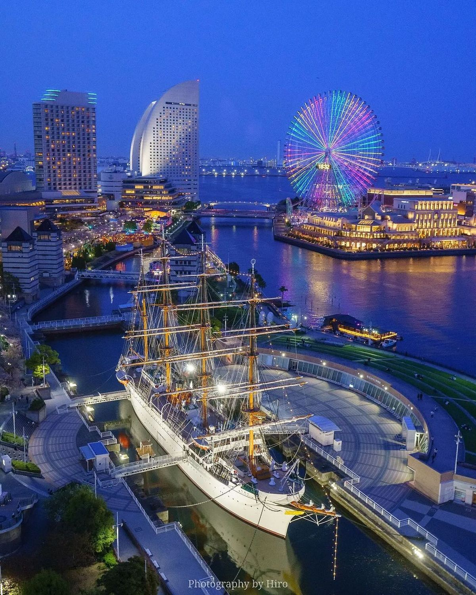
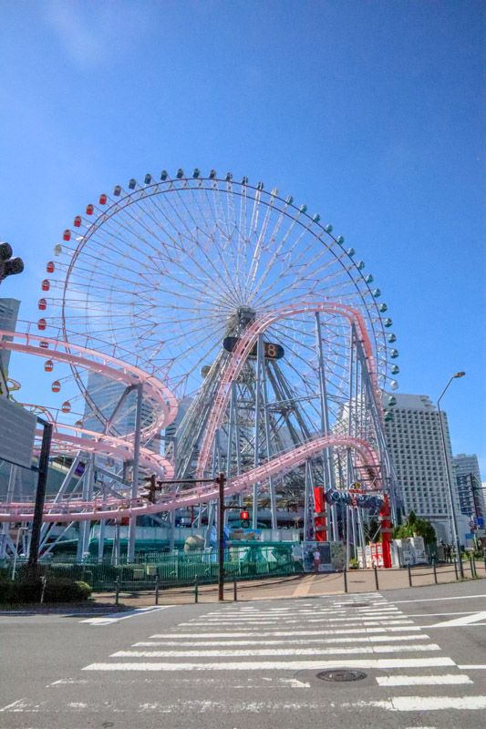
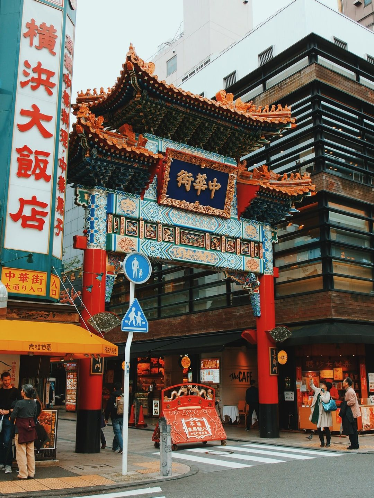

夕方の街並み
空の色がやわらかく変わる時間の横浜は、いつ見ても特別です。家々の景色にも、どこかあたたかさがあります。
横浜には、にぎやかさと落ち着きの両方があります。海の開放感、夜のきらめき、そして歩くだけで楽しい街並み。ここでは、私が好きな横浜の風景を三つ紹介します。

空の色がやわらかく変わる時間の横浜は、いつ見ても特別です。家々の景色にも、どこかあたたかさがあります。

横浜らしさを感じる場所の一つです。観覧車や光のある景色を見ると、気分まで少し前向きになります。

色や音、人の流れに活気があって、歩くだけでも楽しい場所です。横浜の多様な魅力を感じられます。